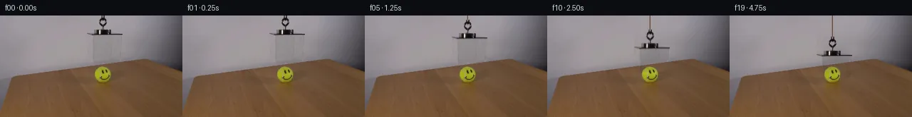
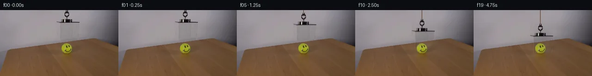
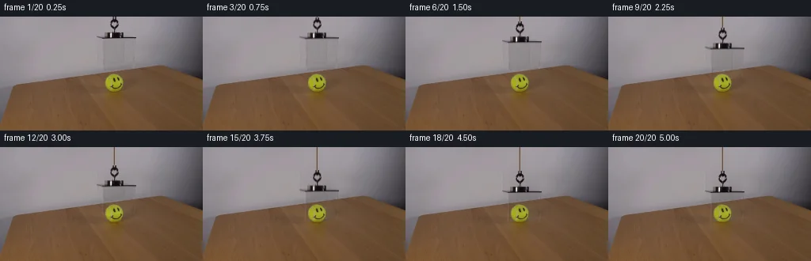
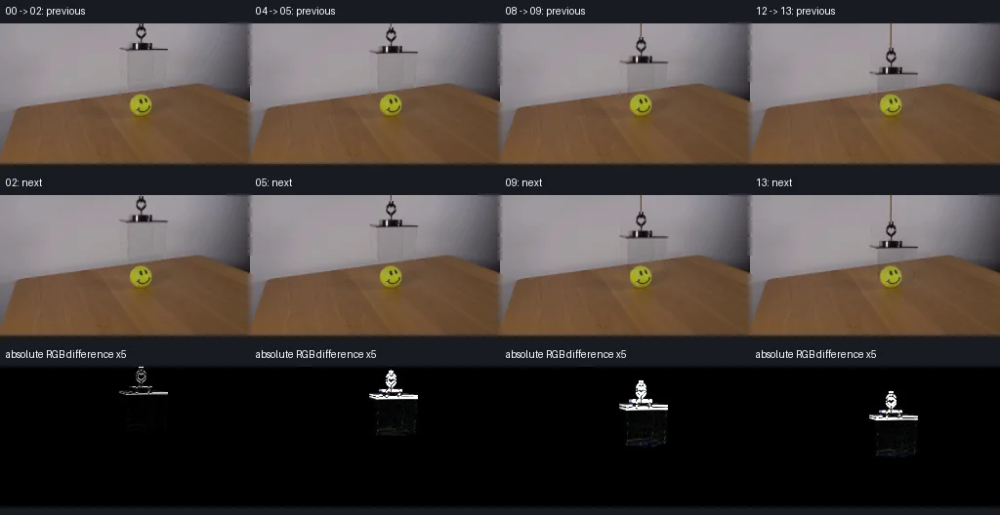

V0 · 初版
2026-11-05T10:23:32.946594+00:00 · RGB 7d54653c7c47
![]()
Observable Generation Trace
把最终像素视频、Harness 冻结的每轮候选、真实工具事件和 Agent 自述放在同一页。可观测证据与模型自述分开标记，避免把“模型说它检查过”误当成真实工具调用。
![首帧]()
Static locked-off single-shot with fixed frame throughout filmed with constant framerate in real-time. The scene shows a realistic scientific demonstration. The scene only contains the described setup and actions. The clear acrylic box was suspended over the tennis ball with a smiley face. The tennis ball with the smiley is positioned on a wooden table. The clear acrylic box hanging from an orange cord lowers to cover the tennis ball with a smiley face.
首帧显示在左侧播放器初始画面。Track 权限、隔离和 tensor 一致性来自 run manifest，而不是 METHOD.md。
默认勾选初版和最终版；可选其他版本一起同步播放。仅检查图更新的连续重复快照已合并，回退旧视频仍保留为一次修订。
Observable events
来源：events.jsonl + run manifest
此 Track 禁止读取输出图片。逐轮预览由外部 Harness 自动冻结，只用于事后审计，生成 Agent 当时看不到这些页面。
Frozen candidates
每张图来自该 round 的真实 00 / 01 / 05 / 10 / 19 帧

pixels 33a693334ead9b2c · code 9df33af40a5701cf
--- previous/generate.py
+++ current/generate.py
@@ -0,0 +1,209 @@
+"""Generate a fixed-camera continuation with local photograph-derived layers.
+
+Uses the input photograph, harmonic background repair, linear optical layers,
+subpixel vertical translation, and small analytic cord/contact-light layers.
+No model, external renderer, network input, or generated-image viewing is used.
+"""
+from pathlib import Path
+import json
+import numpy as np
+from PIL import Image, ImageDraw
+import cv2
+from scipy import sparse
+from scipy.sparse.linalg import spsolve
+from scipy.ndimage import shift, gaussian_filter
+from artifact_io import save
+
+ROOT = Path(__file__).resolve().parent
+H, W = 144, 256
+SRC = np.asarray(Image.open(ROOT / 'first_frame.png').convert('RGB'), dtype=np.uint8)
+Y, X = np.mgrid[:H, :W]
+
+def polygon(points, scale=4):
+ im = Image.new('L', (W * scale, H * scale))
+ ImageDraw.Draw(im).polygon([(round(x*scale), round(y*scale)) for x,y in points], fill=255)
+ return np.asarray(im.resize((W,H), Image.Resampling.LANCZOS), dtype=float) / 255
+
+# The outline comes from the supplied photograph. Small support around it
+# also captures the original antialiasing and weak reflections.
+glass_outline = [(129,27), (171,27), (170,60.5), (156,65), (129.5,63)]
+glass_support = polygon(glass_outline) > 0.02
+hardware_support = np.zeros((H,W), dtype=np.uint8)
+hardware_support[:20,137:153] = 1
+hardware_support[19:28,130:157] = 1
+hardware_support[24:29,121:173] = 1
+repair_mask = cv2.dilate((glass_support | hardware_support.astype(bool)).astype(np.uint8),
+ np.ones((3,3),np.uint8), iterations=1).astype(bool)
+# Do not touch the ball or table; the lowermost source repair is on the wall.
+repair_mask[Y > 65] = False
+
+def harmonic_repair(image, mask):
+ """Solve a discrete Laplace boundary problem in the hidden wall region."""
+ yy,xx=np.where(mask)
+ n=len(xx)
+ ids=np.full((H,W),-1,dtype=int)
+ ids[yy,xx]=np.arange(n)
+ rows=[];cols=[];vals=[]
+ rhs=np.zeros((n,3),float)
+ for k,(y,x) in enumerate(zip(yy,xx)):
+ degree=0
+ for dy,dx in ((-1,0),(1,0),(0,-1),(0,1)):
+ ny,nx=y+dy,x+dx
+ if 0<=ny<H and 0<=nx<W:
+ degree+=1
+ j=ids[ny,nx]
+ if j>=0:
+ rows.append(k);cols.append(j);vals.append(-1.)
+ else:
+ rhs[k]+=image[ny,nx]
+ rows.append(k);cols.append(k);vals.append(float(degree))
+ mat=sparse.csr_matrix((vals,(rows,cols)),shape=(n,n))
+ result=image.astype(float).copy()
+ result[yy,xx]=spsolve(mat,rhs)
+ return result
+
+BACKGROUND=harmonic_repair(SRC,repair_mask)
+S=SRC.astype(float)
+# A local material has output = transmitted background + emitted/reflected
+# color. Dark metal is treated as a foreground matte; glass as transmission.
+trans=np.ones_like(BACKGROUND)
+emit=np.zeros_like(BACKGROUND)
+trans[repair_mask]=S[repair_mask]/np.maximum(BACKGROUND[repair_mask],1)
+source_luma=S.mean(axis=2)
+bg_luma=BACKGROUND.mean(axis=2)
+metal=repair_mask & (Y<=28) & (source_luma < bg_luma-18)
+alpha=np.clip((bg_luma-source_luma)/np.maximum(bg_luma-10,1),0,1)
+trans[metal]=(1-alpha[metal,None])
+emit[metal]=S[metal]-BACKGROUND[metal]*trans[metal]
+delta_trans=trans-1
+
+# A modest penumbra belongs to the descending box; the ball's existing
+# tabletop shadow remains in the photograph.
+ball_support=((S[:,:,1]-S[:,:,2]>48)&(S[:,:,0]-S[:,:,2]>45)&
+ (X>=132)&(X<=155)&(Y>=72)&(Y<=97))
+wood=(S[:,:,0]-S[:,:,2]>20)&(Y>=65)&~ball_support
+
+# Native lower outline, relative to the photographed enclosure.
+rim_points=[(129.5,63.0),(156.0,65.0),(170.0,60.5)]
… diff truncated; 122 more lines …
pixels e2cfd64c1866932c · code 837a32a18727e8bb
--- previous/generate.py
+++ current/generate.py
@@ -68,7 +68,15 @@
# color. Dark metal is treated as a foreground matte; glass as transmission.
trans=np.ones_like(BACKGROUND)
emit=np.zeros_like(BACKGROUND)
-trans[repair_mask]=S[repair_mask]/np.maximum(BACKGROUND[repair_mask],1)
+raw_trans=S/np.maximum(BACKGROUND,1)
+trans[repair_mask]=np.minimum(raw_trans[repair_mask],1.0)
+# Separate reflected light from transmission; this prevents a bright native
+# wall reflection from amplifying the ball's color after translation.
+glass_coverage=polygon(glass_outline)
+glass_only=repair_mask & (Y>28)
+cap=1.0-0.05*glass_coverage
+trans[glass_only]=np.minimum(trans[glass_only],cap[glass_only,None])
+emit[repair_mask]=S[repair_mask]-BACKGROUND[repair_mask]*trans[repair_mask]
source_luma=S.mean(axis=2)
bg_luma=BACKGROUND.mean(axis=2)
metal=repair_mask & (Y<=28) & (source_luma < bg_luma-18)
@@ -79,8 +87,7 @@
# A modest penumbra belongs to the descending box; the ball's existing
# tabletop shadow remains in the photograph.
-ball_support=((S[:,:,1]-S[:,:,2]>48)&(S[:,:,0]-S[:,:,2]>45)&
- (X>=132)&(X<=155)&(Y>=72)&(Y<=97))
+ball_support=(((X-144.4)/11.0)**2+((Y-84.0)/11.3)**2 < 1.04)
wood=(S[:,:,0]-S[:,:,2]>20)&(Y>=65)&~ball_support
# Native lower outline, relative to the photographed enclosure.
@@ -176,11 +183,11 @@
assert np.all(np.diff(ds)>=0) and ds[-1]==30
assert ds.max()+65==95
# The yellow tennis-ball features remain at the same image coordinates.
- dark_eyes=(X>=138)&(X<=148)&(Y>=77)&(Y<=83)&(source_luma<110)&ball_support
- smile=(X>=137)&(X<=152)&(Y>=86)&(Y<=93)&(source_luma<110)&ball_support
- face=dark_eyes|smile
+ ball_interior=(((X-144.4)/11.0)**2+((Y-84.0)/11.3)**2 < 0.88)
+ face=ball_interior&(source_luma<105)&(Y>=77)&(Y<=93)
+ body=ball_interior&(source_luma>112)
assert face.sum()>10
- assert frames[-1][face].mean() < frames[-1][ball_support&~face].mean()-25
+ assert frames[-1][face].mean() < frames[-1][body].mean()-25
changes=np.abs(np.diff(frames.astype(float),axis=0))
report={
'shape':list(frames.shape),'dtype':str(frames.dtype),'fps':4,
@@ -195,7 +202,7 @@
'step_mean_rgb_abs_difference':changes.mean(axis=(1,2,3)).round(5).tolist(),
'step_changed_pixels':np.any(changes>0,axis=3).sum(axis=(1,2)).tolist(),
'final_face_mean_rgb':float(frames[-1][face].mean()),
- 'final_ball_body_mean_rgb':float(frames[-1][ball_support&~face].mean()),
+ 'final_ball_body_mean_rgb':float(frames[-1][body].mean()),
'max_box_lower_edge_y':95.,
'acrylic_source_transmission_percentiles':np.percentile(trans[glass_support&(Y>29)].mean(axis=1),[0,5,50,95,100]).round(4).tolist(),
}pixels e2cfd64c1866932c · code 837a32a18727e8bb
No generate.py text change in this frozen round.
pixels e2cfd64c1866932c · code a1b13b1985fe9362
--- previous/generate.py
+++ current/generate.py
@@ -5,6 +5,9 @@
No model, external renderer, network input, or generated-image viewing is used.
"""
from pathlib import Path
+import sys
+sys.dont_write_bytecode = True
+import base64
import json
import numpy as np
from PIL import Image, ImageDraw
@@ -175,6 +178,22 @@
decoded=np.stack([(p>>16)&255,(p>>8)&255,p&255],axis=-1).astype(np.uint8)
assert png.shape==(H,W,3) and np.array_equal(png,decoded)
assert np.array_equal(png,frames[t])
+ # Decode the standalone player's first frame and every delta packet.
+ html=(ROOT/'index.html').read_text()
+ data=json.loads(html.split('const DATA=',1)[1].split(';\nfunction unpack',1)[0])
+ def unpack(text):
+ return np.frombuffer(base64.b64decode(text),dtype='<u4')
+ player=unpack(data['first']).copy()
+ assert np.array_equal(player,packed[:,:,0].reshape(-1))
+ assert len(data['deltas'])==19 and '},250)' in html
+ for t,encoded in enumerate(data['deltas'],1):
+ packet=unpack(encoded)
+ k=0
+ while k<len(packet):
+ start,count=int(packet[k]),int(packet[k+1])
+ player[start:start+count]=packet[k+2:k+2+count]
+ k+=2+count
+ assert np.array_equal(player,packed[:,:,t].reshape(-1))
# All edits have a bounded support, including antialiasing and shadows.
fixed=(X<116)|(X>179)|(Y>103)
assert np.all(frames[:,fixed,:]==SRC[fixed,:])
@@ -193,6 +212,7 @@
'shape':list(frames.shape),'dtype':str(frames.dtype),'fps':4,
'duration_seconds':5,'packed_shape':list(packed.shape),
'packed_dtype':str(packed.dtype),'png_tensor_exact_match':True,
+ 'html_player_all_frames_exact_match':True,
'first_frame_exact_match':True,'fixed_region_exact_match':True,
'final_hold_exact_match':True,'generated_images_visually_viewed':False,
'displacement_px':ds.round(4).tolist(),Final visual checks
Harness 保存的最终产物


Agent claims
以下文字由生成 Agent 撰写，不等同于工具证据
The supplied frame is a 256 × 144 RGB photograph with a fixed viewpoint. The wooden tabletop fills the lower part of the frame; its back edge slopes from about (16, 86) through (204, 61) toward the right edge. Gray walls fill the upper background. A yellow-green tennis ball bearing two dark eyes and a curved smile sits near (144, 84), with a radius of about 11 pixels and contact near y = 96. Its original texture, face, position, and tabletop shadow must remain anchored.
A clear acrylic enclosure hangs above the ball. The dark upper rim spans approximately x = 122–171 at y = 25–27; the transparent walls occupy roughly x = 129–170, y = 28–65. Visible vertical seams occur near x = 129, 154, and 169. The lower outline is slightly sloped by perspective, with its lowest front corner near y = 66. A dark clamp sits around x = 130–155, y = 19–27, attached to a loop and suspension centered at x = 145. The enclosure is wide enough to clear the ball on both sides. The prompt identifies the suspension as orange cord, although the visible short section in the initial photograph is dark and desaturated.
The camera, table, lighting, and ball stay fixed. The enclosure and attached clamp/loop move vertically down by about 30 pixels until the open lower rim reaches the tabletop around the ball. The cord lengthens from the upper frame boundary. Clear material transmits the background and ball; its seams, reflections, and dark lid travel with it. No added hand or actuator appears. The controlled motion eases in and out and settles without penetrating the tabletop or striking the ball.
Frames are sampled at 4 fps; the 20 displayed intervals cover five seconds. Frame 00 is copied exactly from the supplied PNG. Below, vertical displacement is an approximate target and will be refined using the measured enclosure outline.
| Frame | Time (s) | Lowering (px) | Event |
|---|---|---|---|
| 00 | 0.00 | 0.0 | Exact initial photograph; box suspended above ball. |
| 01 | 0.25 | 0.0 | Initial pause. |
| 02 | 0.50 | 0.3 | Cord begins controlled payout. |
| 03 | 0.75 | 1.3 | Box begins descending vertically. |
| 04 | 1.00 | 3.0 | Smooth acceleration. |
| 05 | 1.25 | 5.1 | Lower rim approaches ball top. |
| 06 | 1.50 | 7.8 | Acrylic sides begin crossing ball height. |
| 07 | 1.75 | 10.7 | Continuous steady descent. |
| 08 | 2.00 | 13.9 | Ball is partly enclosed. |
| 09 | 2.25 | 17.1 | Transparent walls overlap face. |
| 10 | 2.50 | 20.2 | Box continues around stationary ball. |
| 11 | 2.75 | 23.0 | Beginning deceleration. |
| 12 | 3.00 | 25.5 | Ball is almost fully enclosed. |
| 13 | 3.25 | 27.5 | Lower rim approaches tabletop. |
| 14 | 3.50 | 29.0 | Slow final approach. |
| 15 | 3.75 | 29.8 | Nearly settled. |
| 16 | 4.00 | 30.0 | Rim contacts tabletop; ball remains visible. |
| 17 | 4.25 | 30.0 | Final stationary hold. |
| 18 | 4.50 | 30.0 | Final stationary hold. |
| 19 | 4.75 | 30.0 | Final stationary hold. |
Use only local Python processing of the provided photograph: estimate the gray wall hidden by the hanging assembly, extract dark hardware and acrylic transmission/reflection from the original pixels, translate those layers vertically with subpixel sampling, and composite them onto the fixed original scene. Draw the newly exposed suspension cord and restrained contact shading locally. Save the required packed RGB tensor, PNG frames, inspection sheets, and standalone HTML player. Inspect generated outputs only with local code and numeric checks, including exact first-frame equality, bounds, motion, fixed-scene equality, and tensor/PNG agreement. No generated image will be opened with an image Read/View tool.
This continuation was made entirely with local Python pixel processing of first_frame.png. No network content, other scene inputs, external AI model, physics renderer, or subagent was used. The initial image attached to the request informed the measurements. All later inspection used numeric processing of local files; generated frames and inspection sheets were never opened in an image Read/View tool.
generate.py measures and isolates the enclosure, dark mounting clamp, loop, and short original suspension. It reconstructs the gray wall hidden by that assembly by solving a discrete harmonic interpolation problem with the nearby photograph pixels as boundary values. The repaired region contains 2,412 pixels and ends above the ball and tabletop.
The original enclosure pixels are decomposed into a transmitted background term and an additive reflection term. Glass normally transmits about 95% of the underlying scene, with darker native seams and small reflected highlights retained. Dark hardware uses a foreground opacity estimate and retains its original color details. Reflections are separated from transmission so that a bright wall reflection does not multiply the tennis ball's color.
These material layers are translated vertically with bilinear subpixel resampling. The new suspension segment is drawn as a thin, muted orange cord from the top frame boundary to the translated original attachment. Narrow acrylic highlights and a soft local rim shadow help the clear enclosure remain legible against the wooden table. The table, ball, face, and original ball shadow come from the fixed photograph. Transparency changes the observed colors of the enclosed ball without moving or redrawing its features.
The motion holds for the first quarter second, descends 30 pixels with a cubic ease over the next 3.75 seconds, and then holds. The maximum interval displacement is approximately 3.00 pixels. The lower front outline settles at y = 95 around the ball. This is a photograph-derived 2D construction with approximate perspective and contact geometry, rather than a reconstructed 3D simulation.
There are 20 RGB frames, each 256 × 144, displayed at 4 fps for five seconds. frames/00.png has exactly the same decoded RGB pixels as the supplied frame. pixels.npz stores pixels as a uint32 array with shape (144, 256, 20); each element is the packed value 0xRRGGBB.
index.html is a standalone player with embedded frame data, playback, seeking, looping, and replay. inspection.png is the required eight-frame contact sheet. transition_check.png shows four pairs of frames and amplified absolute differences. These sheets were generated for the deliverable without visual review.
numeric_checks.json records the final checks and motion measurements. Validation verifies:
Run python generate.py from this workspace to reproduce all image, tensor, player, and numeric-check outputs. OBSERVATION.md contains the measurements and event plan written before implementation.